SQL Project on customer churn
Introduction
In today’s competitive telecom market, customer churn—when users discontinue their service—remains a critical concern. With an industry churn rate ranging from 15% to 25%, retaining customers is not just a priority; it's a strategic necessity. Since acquiring new customers is significantly more expensive than retaining existing ones, businesses need to proactively identify which customers are most at risk of leaving. This project focuses on using data-driven insights to understand why customers churn and how businesses can anticipate and reduce attrition. By analyzing a range of customer behaviors—such as service usage, demographics, and engagement channels—we aim to uncover patterns that drive churn and help inform targeted retention strategies..
🔍 Key Analytical Questions
Exploratory Analysis
1.SQL Snippet: Checking table names from the database
SELECT TABLE_NAME FROM INFORMATION_SCHEMA.TABLESQuery Result:
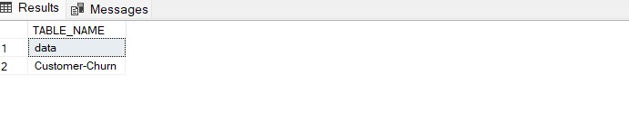2.SQL Snippet: Checking column names and data type
SELECT COLUMN_NAME, DATA_TYPE
FROM INFORMATION_SCHEMA.COLUMNS
WHERE TABLE_NAME = 'Customer-Churn';
Query Result:
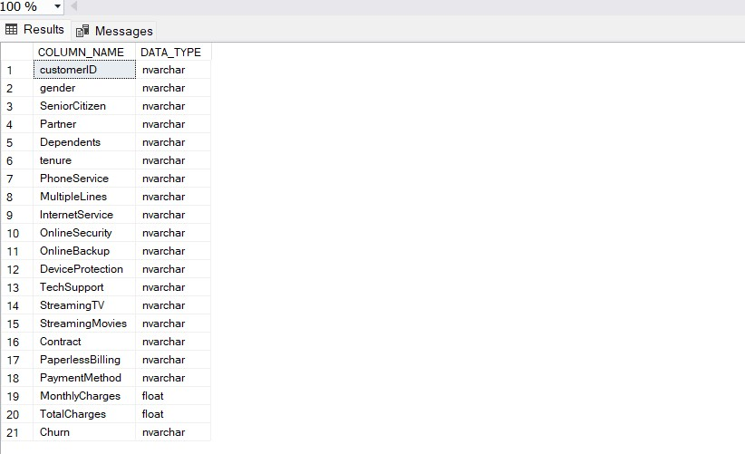3.SQL Snippet: Checking Null
SELECT COUNT(*) AS 'NUMBER OF NULLS' FROM [Customer-Churn] WHERE TotalCharges IS NULL;Query Result:
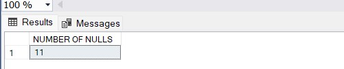After deep analysis on each columns for null values, I found out that there were 11 rows with null so decided to delete them.
DELETE FROM [Customer-Churn]
WHERE TotalCharges IS NULL;Query Result:
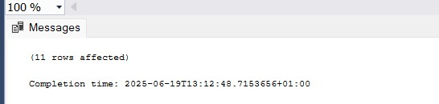and check again ..
SELECT COUNT(*) AS 'NUMBER OF NULLS' FROM [Customer-Churn] WHERE TotalCharges IS NULL;Query Result:
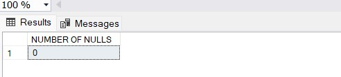4.SQL Snippet: Checking Duplicates
SELECT customerID, COUNT(*) AS Duplicate
FROM [Customer-Churn]
GROUP BY customerID
HAVING COUNT(*) > 1;Query Result:
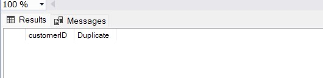Descriptive Analysis
5.SQL Snippet: Proportion of Churn
SELECT Churn, count(*) AS Numbers FROM [Customer-Churn] group by Churn;Query Result:
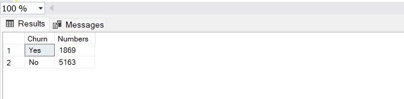Churn Proportion
SELECT (cast (Count(*) AS float) / (SELECT COUNT (*) FROM [Customer-Churn])) * 100 AS Churn_Percentage
FROM [Customer-Churn] where Churn = 'Yes';Query Result:
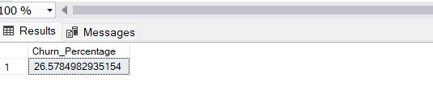6.SQL Snippet: Tenure Vs Churn analysis
WITH MyGroup AS (SELECT tenure,Churn,
CASE
WHEN tenure <= 12 THEN '1 yrs'
WHEN tenure > 12 AND tenure<= 24 THEN '2 yrs'
WHEN tenure > 24 AND tenure<= 36 THEN '3 yrs'
WHEN tenure > 36 AND tenure<= 48 THEN '4 yrs'
WHEN tenure > 48 AND tenure<= 60 THEN '5 yrs'
WHEN tenure > 60 AND tenure<= 72 THEN '6 yrs'
ELSE 'Most royal'
END AS TenureGroup FROM [Customer-Churn])
SELECT TenureGroup,
count (CASE WHEN Churn= 'Yes' THEN 1 ELSE NULL END) AS Churn_yes,
count (CASE WHEN Churn = 'No' THEN 1 ELSE NULL END) AS Churn_no
FROM MyGroup group by TenureGroup order by TenureGroup;
Query Result:
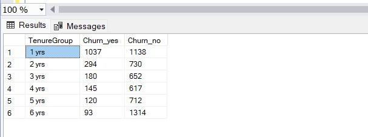7.SQL Snippet: Gender and Churn relationship
SELECT Churn,
count (CASE WHEN gender= 'male' THEN 1 ELSE NULL END) AS Male,
count (CASE WHEN gender = 'female' THEN 1 ELSE NULL END) AS Female
FROM [Customer-Churn]
group by Churn;Query Result:
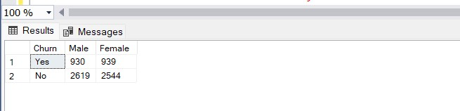8.SQL Snippet: Contract type and Churn relationship
SELECT Contract,
COUNT (CASE WHEN Churn = 'Yes' THEN 1 ELSE NULL END) AS 'Churn-Yes',
COUNT (CASE WHEN Churn = 'No' THEN 1 ELSE NULL END) AS 'Churn-No'
FROM [Customer-Churn] GROUP BY Contract;Query Result:
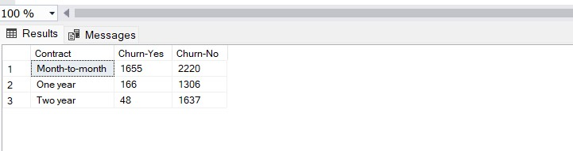9.SQL Snippet: Services and Churn relationship
SELECT churn,
COUNT (CASE WHEN PhoneService = 'Yes' THEN 1 ELSE NULL END) AS PhoneService,
COUNT (CASE WHEN OnlineSecurity = 'Yes' THEN 1 ELSE NULL END) AS OnlineSecurity,
COUNT (CASE WHEN MultipleLines = 'Yes' THEN 1 ELSE NULL END) AS MultipleLines,
COUNT (CASE WHEN OnlineBackup = 'Yes' THEN 1 ELSE NULL END) AS OnlineBackup,
COUNT (CASE WHEN DeviceProtection = 'Yes' THEN 1 ELSE NULL END) AS DeviceProtection,
COUNT (CASE WHEN TechSupport = 'Yes' THEN 1 ELSE NULL END) AS TechSupport,
COUNT (CASE WHEN StreamingTV = 'Yes' THEN 1 ELSE NULL END) AS StreamingTV,
COUNT (CASE WHEN StreamingMovies = 'Yes' THEN 1 ELSE NULL END) AS StreamingMovies
FROM [Customer-Churn] GROUP BY Churn;Query Result:
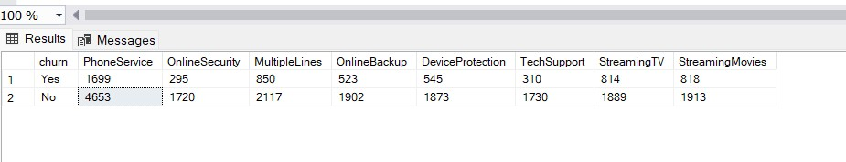Recommendations
PowerBI Desktop visualization
PowerBI is really powerful tool to viasulized fidings effectively and efficiently.
I imported my excel data set into PowerBi Desktop, validate, clean and modify data sets and columns to
create meaniful data viasulizations. In order to see insight relatinships between customer churn and different products
, i had to create new columns by unpivoting methods and transformed them into rows from 8 different propducts they were
originally in individual columns.